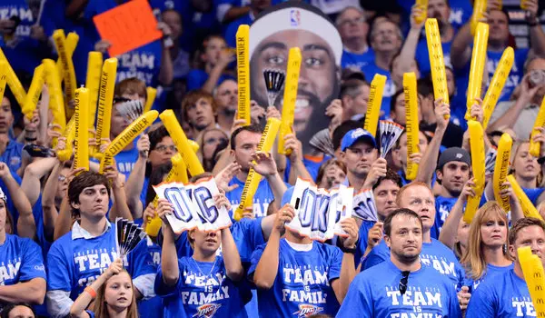

Fan engagement is an important part of professional sports organizations. The Oklahoma City Thunder have built a loyal fan base that supports the team both at home and across the league. Fans regularly attend games, participate in events, and follow the team through digital platforms. This strong support system contributes to the energetic atmosphere at home games.
This page allows fans to learn more about staying connected with the team. While this form is for demonstration purposes, it reflects common features found on professional sports websites. Features like these help fans feel involved and informed. Digital engagement has become an essential tool for modern sports organizations.
Maintaining communication with fans helps organizations improve engagement, promote events, and strengthen relationships with their audience. Effective communication allows teams to better understand fan needs and preferences. Strong relationships between teams and fans contribute to long-term success and loyalty.

Image source: The New York Times